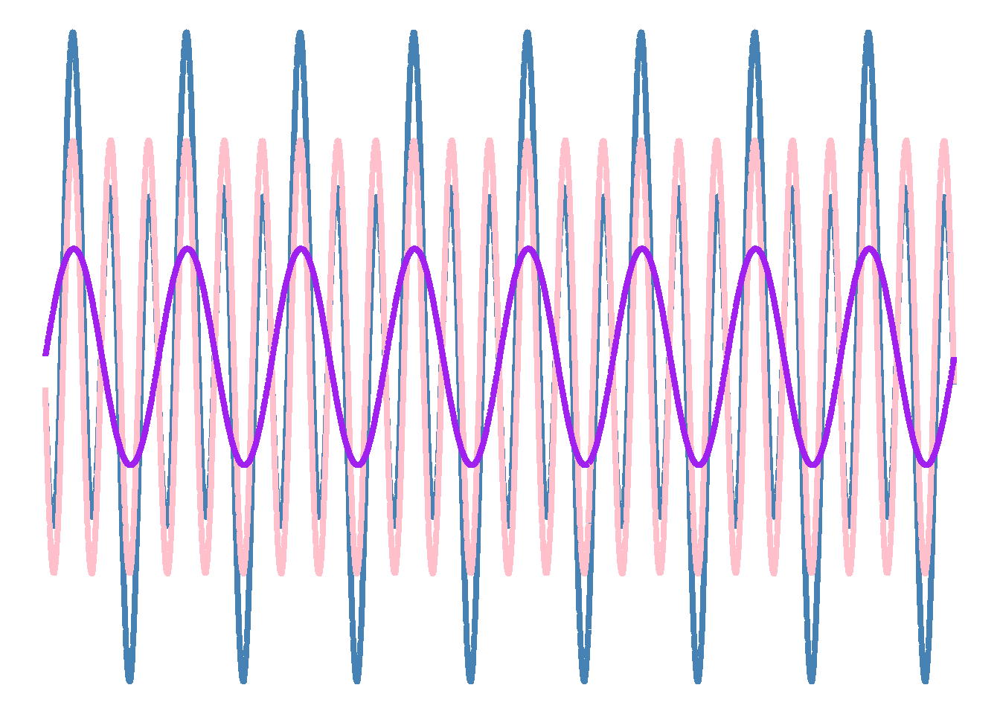

As we have already discussed, the degree to which research is reproducible is determined by the availability of:
The data
Code to analyze the data
Text to describe the code
To make these ingredients even more tasty, we might want to have them nicely stored together. Using the tools we discuss in this course we can think of data analysis projects as self-contained projects with all necessary ingredients. RStudio projects can help you organize your data and code, and text in one place. You can also link your project to an online repository for others to access. In this chapter we will discuss how reproducible report can be regarded as such a project. Online collaboration will be discussed in the next chapter.
7.1 RStudio projects and your reproducible report
When you build an analysis in a R markdown or quarto file, R will use the folder that the source file is in as the root directory. This directory (or folder) is the top directory in a file system. This means that R will look for data or other files used to generate the report in this folder structure. Think of this folder as ./ (confusing, I know! But bare with me!). Any sub-folders to the root directory can be called things like
./data/ (a folder where you keep data files),
./figures/ (a folder where you output figures from analyses).
The R markdown or quarto file, being in the root directory will have the “address” ./my_rmarkdown_file.Rmd.
This has several advantages, as long as you stick to one rule: When doing an analysis, always use relative paths (“addresses” to files and folders). Never reference a folder or file by their absolute path. The absolute path for the file I’m writing in now is /Users/Daniel1/Documents/projects/quant-methods/06-writing-reports.qmd. The relative path is ./06-writing-reports.qmd. When working in a “project” you may move the folder containing your project to other locations, but relative paths will not break.
If you want to share your analysis, all you need to do is share the folder with all content with your friend. If you use relative paths, everything will work on your friends computer. If you use absolute paths, nothing will work, unless your friends computer uses the same folder structure (highly unlikely).
RStudio projects makes it easy to jump back and forth between projects. The project menu (top right corner in RStudio) contains all your recent projects. When starting a new project, R will create a .Rproj file that contains the settings for your project. If you start a project and click this file, a settings menu will appear where you can customize settings for your particular project.
What does this have to do with my quarto/RMarkdown file? As mentioned above, the source file is often written in a context where you have data and other files that help you create your desired output. By always working in a project makes it easy to keep every file in the right place.
7.2 Getting started with R projects
To start a new project in RStudio:
Press the project menu in the upper right corner, choose “Start a project in a brand new working directory”
In the next menu, select “New Project” and chose a suitable location on your machine for the project to live.
Un-check the option of creating a git repository. We will do this later.
Name the project with an informative name. “Project1” is not good enough, “rproject-tutorial” or “rproject-report-workshop” is better as you will be able to track it down afterwards.
We have now started up a brand new project without version control. The next step is to make sure the setting of the project is up date with our Global settings in RStudio. By clicking the .Rproj file in our files tab, we will open up a settings window. These are the settings for the project. Under General we see that we can set RStudio to handle the workspace and history as default. This means that our global options will be used. The global options regarding workspace should be to never save workspace, do not restore on start up and do not save history.
7.2.1 What folder am I in?
The great advantage of an RStudio Project is that it will make it easier to keep everything contained in our folder. To check what folder we are currently in, type getwd() in the console. R should return the full path to our working directory. If this is the case, success. If not, you have probably not succeeded in opening up a project, or you have somehow told R to set another working directory.
The working directory is the root directory. It is possible to set the working directory manually. However, we should aim not to do that! The R command setwd() should not be used as it breaks relative paths.
See R for Data Science, chapter 7 for more details on RStudio projects.
7.3 Authoring reports in quarto
So much fuzz just for writing a report? Yes, it is a bit more work to get started. The upside is that this system is easier to navigate with increasing complexity compared to a system where text, figures, tables and software are located on different locations in your computer and the final report requires copy-paste operations.
As mentioned before, we will focus on the more modern format for authoring reports in R, quarto. In this section we will introduce the basic building blocks of a report and how to put them together. We have already covered figures and tables, now its time to put the into context.
7.3.1 The Markdown syntax, and friends
We have already mentioned the markup language markdown1. This enables an author like yourself to format your text in a plain text editor. This has the advantage of keeping formatting explicit and available from the keyboard. In a word editor like MS Word, formatting is sometimes not obvious and you need to point and click make changes. The R-markdown style of markdown includes the ability to combine code in code chunks and embedded in text. This makes it possible to include code output in the final report. Another technical achievement that makes RMarkdown and quarto possible is Pandoc, a general document conversion software. Pandoc can convert files from one format to another, this includes the operations that we use, from markdown to HTML, PDF or Word. Both markdown and pandoc are free and open source software that makes life easy for us!
7.3.1.1 Markdown basics
The idea of using markdown is that everything is formatted in plain text. This requires a little bit of extra syntax. We can use bold or italic, striketrough and superscript. Lists are also an option as numbered:
The whole section above will look like this in your plain text editor:
The idea of using markdown is that everything is formatted in plain text.
This requires a little bit of extra syntax. We can use **bold** or *italic*,
~~striketrough~~ and ^superscript^. Lists are also an option as numbered:
1. Item one
2. Item two
And, as unordered
* Item x
* Item y
+ With sub item z
Links can be added [like this](https://rmarkdown.rstudio.com/authoring_basics.html).
A table can be added also, like this:
|Column 1|Column2|
|---| ---|
|Item1 | Item 2|
7.3.2 Additional formatting
In addition to plain markdown, we can also write HTML or LaTeX in RMarkdown or quarto files.
HTML is convenient when we want to add formatted text beyond the capabilities of markdown, such as color. Some formatting might be considered more easily remembered such as subscript and superscript. Notice that HTML and markdown syntax can be combined:
Some Markdown text with some blue text, superscript.
See here for syntax
HTML is convenient when we want to add formatted text beyond the capabilities of markdown, such as <span style="color:red">color</span>. Some formatting might be considered more easily remembered such as <sub>subscript</sub> and <sup>superscript</sup>. Notice that HTML and markdown syntax can be combined:Some Markdown text with <span style="color:blue">some *blue* text, <sup><span style="color:red">super</span>**script**</sup></span>.
LaTeX is another plain text formatting system, or markup language, but it far more complex than markdown. Text formatting using LaTeX is probably not needed for simpler documents as markdown and HTML will be enough. The additional advantage of using LaTeX comes with equations.
Equations can be written inline, such as the standard deviation \(s = \sqrt{\frac{\sum{(x_i - \bar{x})^2}}{n-1}}\). An equation can also be written on the center of the document
\[
F=ma
\tag{7.1}\]
We are also able to cross-reference the equation Equation 7.1 for force (\(F\)).
A larger collection of equations is sometimes needed to describe a statistical model, as in Equation 7.2.
We recognize the R code inside the code chunk but we have only touched upon code chunk settings. These are settings that tells R (or quarto) how to handle output from the code chunk. message: false indicate that any messages from R code should not be displayed in the output document. echo: true indicates that the code in the code chunk should be displayed in the output document. The label is important as it enables cross-referencing the output. If your code chunk outputs a figure the prefix fig- must be in the label to enable cross-referencing. Likewise, if your code chunk creates an table, the prefix tbl- must be in the label. Possible code chunk settings also include figure and table captions.
Settings can also be specified in the YAML field in quarto files. We might not want to display our code, messages or warnings in the final output. We would specify this in the YAML field as
---title:"A basic quarto report without code"execute: echo: false message: false warning: false---
We have mentioned cross-referencing above, this basically means referencing specific parts of your document in the text. A figure might be mentioned in the text, such as Figure 7.1. To insert the cross-reference in text, use the @fig-label syntax where fig- is the required prefix for figures and label is a user defined unique identifier. The label should be included in the code chunk under such as #| label: fig-label. The equivalent prefix for tables is tbl-.

Figure 7.1: This is an example of a Figure with a caption.
We might want to cross-reference a section in our document. This is easily done by inserting a tag at the section header such as {#sec-cross-reference}, this tag can be referenced in text using @sec-cross-reference resulting in Section 7.3.4. The sec- part is the required prefix for a section.
Citations are mandatory in academic writing. Be sure to take advantage of the built in support for citations. When writing in quarto (or RMarkdown) we can think of a reference as having three parts. The identifier, the reference and the style. We use the identifier when authoring. For example, let’s cite the R for Data Science book, we do this by using the following syntax (Wickham and Grolemund 2017). The syntax requires that we have linked a bibliography to the document. The bibliography should include the reference, with the same identifier. The bibliography is a collection of reference entries written in bibtext format (see below). It must be included in the document meta data field (YAML field).
@book{r4ds, title={R for data science}, author={Wickham, Hadley and {\c{C}}etinkaya-Rundel, Mine and Grolemund, Garrett}, year={2023}, publisher={" O'Reilly Media, Inc."}}
Notice the identifier. When adding the citation [@r4ds] it will turn out to (Wickham and Grolemund 2017) in the formatted text and added to the bottom of the document as a full reference. If we want another citation style we can specify a file responsible for citation styles. The default is the Chicago style. Specifying a citation style file in YAML will change the style, for example csl: my-citation-style.csl tells quarto to use the file my-citation-style.csl when formatting citations. This file can be edited or copied from a large collection of possible styles located in the citation style language repository. The repository is hosted on GitHub and searchable, click “Go to file” and type “vancouver” to get examples of CSL files that uses a Vancouver-type citation style.
Footnotes can be handy when writing. In the default mode, these will be included as superscript numbers, like this2, numbered by order of appearance.
The syntax for including footnotes is straight forward. Notice that the text for the footnote is included below the paragraph using the identifier created in the text.
See here for footnote syntax
Footnotes can be handy when writing. In the default mode, these will be included as superscript numbers, like this[^footnote], numbered by order of appearance. [^footnote]: This is a footnote.
7.4 Additional files and folder structures in a complete analysis project
As we starting to notice, a report authored in quarto or R Markdown often requires additional files to render properly. We might have a collection of references, some data sets and possibly some analysis files that are not included in the quarto or R markdown file. To keep everything organized I recommend a general folder structure for every analysis project. This structure might change as the project grows or changes. The parts listed below are what I usually end up with as a common set in the majority of projects I work with3.
7.4.1 The readme-file
The README-file can be, or should be an important file for you. When a project is larger than very tiny, it becoms complex and you should include a README-file to tell others and yourself what the project is about and how it is organized. Creating a file called README.md in a GitHub folder automatically renders it on the main page of your repository (more about that later). Here you have the opportunity to outline the project and explain the organization of your projects folder/repository.
I find it very helpful to work with the README-file continuously as the project evolves. It helps me remember where the project is going.
A very basic ouline of the README-file can be
# My projectAuthor:Date:## Project description A description of what this prject is about, the purpose and how to get there. ## Organization of the repositoryFiles are organized as...## Changes and logs2023-08-15: Added a description of the project...
7.4.2/resources
I usually include a sub-folder called resources. Here I keep CSL-files, the bibliography, any styling or templates used to render the report. Keeping this in a separate folder keeps the top-folder clean.
7.4.3/data
The data folder is an important one. Here I keep all data that exists as e.g., .csv or .xlsx files. If I create data in the project, such as combined data sets that are stored for more convienient use, I keep these in a sub-folder (e.g., data/derived-data/)4. If there is a lot of raw unprocessed data, these might be stored in data/raw-data/ with specific sub-folders.
7.4.4/figures
If you want to make figures for presentations or submission to a journal, you might want to save output as .tiff or .pdf files. When doing this it might be a good idea to structure a figure-folder with e.g. figure1.R that renders to e.g. figure1.pdf. If you only include figure output in the quarto, the figure folder might contain R-scripts that produces the figures. The end results are included in the quarto document by sourcing the R-script. This detour might make it easier to find code for a specific figure once your project is large enough.
7.4.5/R
R-scripts that are not figures but contains analyses or data cleaning or the like can be stored in R scripts in a specific folder. The reason to keep R scripts separate from a quarto file might be that they are large and produces some output, like a data set, that is later used in the report file. It makes it easier to find and work on specific code without breaking other parts of your project. Actually, it is a good idea to “build” the parts of your analysis as smaller parts.
7.5 Quarto formats
Quarto brings many possibilities for authoring data-driven formats, including but not restricted to websites, books, blogs and presentations. In this course
7.6 References and footnotes
Wickham, Hadley, and Garrett Grolemund. 2017. R for Data Science: Import, Tidy, Transform, Visualize, and Model Data. 1st ed. Paperback; O’Reilly Media. http://r4ds.had.co.nz/.
Markdown was introduced in 2004 as a syntax to convert plain text to formatted HTML. Markdown is primarily attributed to John Gruber.↩︎